SeqPlotR supports two layout modes. Positional
layouts flow tracks with direction = "right" or
"under" (the %|% and %__%
operators). Patchwork layouts assign each track to a
named rectangle in a layout string, inspired by patchwork.
This vignette also covers the geometry inside a track: windows, margins
and sizing.
library(SeqPlotR)
#>
#> Attaching package: 'SeqPlotR'
#> The following object is masked from 'package:base':
#>
#> %||%
library(GenomicRanges)
#> Loading required package: stats4
#> Loading required package: BiocGenerics
#> Loading required package: generics
#>
#> Attaching package: 'generics'
#> The following objects are masked from 'package:base':
#>
#> as.difftime, as.factor, as.ordered, intersect, is.element, setdiff,
#> setequal, union
#>
#> Attaching package: 'BiocGenerics'
#> The following objects are masked from 'package:stats':
#>
#> IQR, mad, sd, var, xtabs
#> The following objects are masked from 'package:base':
#>
#> anyDuplicated, aperm, append, as.data.frame, basename, cbind,
#> colnames, dirname, do.call, duplicated, eval, evalq, Filter, Find,
#> get, grep, grepl, is.unsorted, lapply, Map, mapply, match, mget,
#> order, paste, pmax, pmax.int, pmin, pmin.int, Position, rank,
#> rbind, Reduce, rownames, sapply, saveRDS, table, tapply, unique,
#> unsplit, which.max, which.min
#> Loading required package: S4Vectors
#>
#> Attaching package: 'S4Vectors'
#> The following object is masked from 'package:utils':
#>
#> findMatches
#> The following objects are masked from 'package:base':
#>
#> expand.grid, I, unname
#> Loading required package: IRanges
#> Loading required package: Seqinfo
win <- GRanges("chr1", IRanges(1e6, 3e6))
gr <- GRanges("chr1", IRanges(seq(1.01e6, 2.99e6, length.out = 200), width = 1),
xv = runif(200, 0, 10), score = rnorm(200))Coordinate conventions
SeqPlotR automatically selects the x-axis unit from the narrowest window in each track:
| Narrowest window width | Displayed unit | scale_factor |
|---|---|---|
| ≥ 1 Mb (1,000,000 bp) | Mb | 1e-6 |
| ≥ 100 bp | kb | 1e-3 |
| < 100 bp | bp | 1 |
All windows in a track share the same unit so axis break intervals
are consistent across panels. Override per-track with
seq_track(window_scale = ...), or per-window by setting
mcols(windows)$scale directly (highest priority). The
examples below use 2 Mb windows, which auto-infer the Mb unit.
Positional layout
track_width and track_height are relative
within the row and column respectively: track A below is
twice as wide as B.
p_pos <- seq_plot() %+%
seq_track(data = gr, mapping = map(x = start, y = score),
windows = win, track_id = "A", track_width = 2) %+% seq_line() %|%
seq_track(data = gr, mapping = map(x = start, y = score),
windows = win, track_id = "B") %+% seq_point() %__%
seq_track(data = gr, mapping = map(x = start, y = score),
windows = win, track_id = "C") %+% seq_area()
p_pos$plot()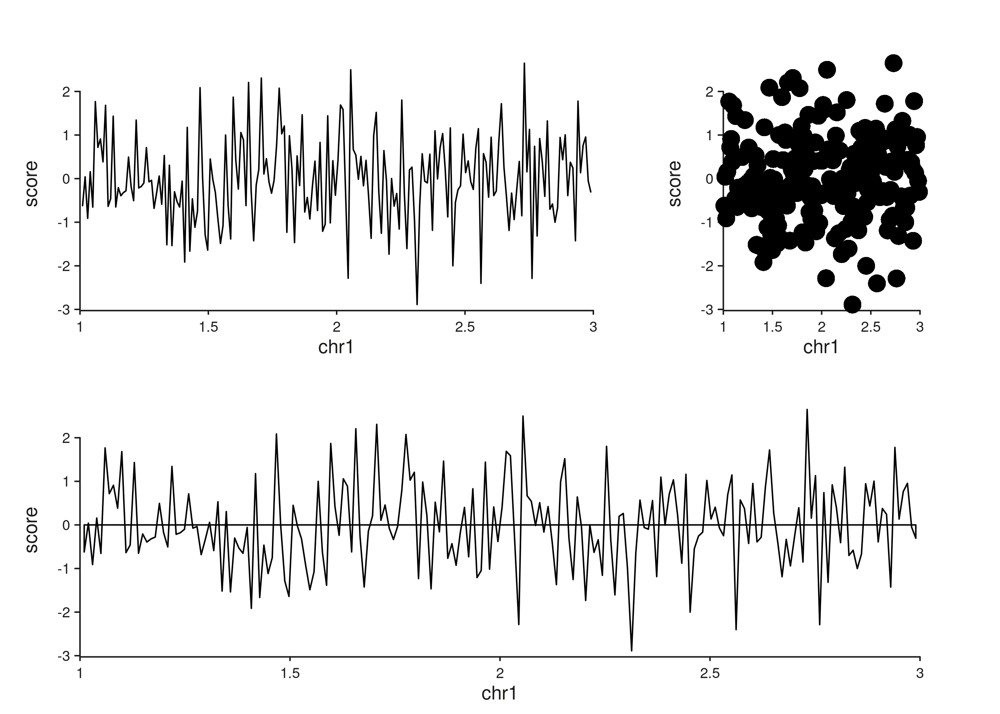
Tracks, windows, and margins
Every track is allocated a rectangular cell in the page layout and partitioned into five nested zones, two at the track level and three at the window level:
-
Track outer margin — outermost band on the track
cell. Axis titles (taken from the track
mapping) are drawn here.seq_track(track_outer_margin = ...). Default0.02. -
Track inner margin — separates the title band from
the window row.
seq_track(track_inner_margin = ...). Default0.02. -
Window outer margin — per-window spacer inside the
track plot region.
seq_track(window_outer_margin = ...). Default0. -
Window inner margin — per-window band holding axis
lines, ticks, and tick labels.
seq_track(window_inner_margin = ...). Default0.02. -
Plot area — what remains per window. Elements
render here;
panel$innercarries these coordinates.
Axis lines sit at the boundary between the plot area and the window
inner margin. The gap between adjacent windows is the plot- or
track-level aes("window.gap.width" = ...) (default
0.01); the gap between tracks is the plot-level
trackGaps (default 0.01). The old
seq_track(window_margin = ...) constructor argument is
deprecated — see Window gap width below.
The schematic below lays out two tracks × two windows using nothing
but SeqPlotR, with each zone coloured via the plot-level
trackBackground, trackInnerBackground,
windowBoxBackground, windowInnerBackground,
and windowBackground aesthetics. seq_text
places a label in each plot area.
# Two windows (2 Mb and 1.5 Mb wide).
schematic_win <- GRanges(
"chr1", IRanges(start = c(1e6, 5e6), end = c(3e6, 6.5e6)))
# One label centred inside each window for each track.
mk_labels <- function(track_name) {
GRanges(
"chr1", IRanges(start = c(2e6, 5.75e6), width = 1),
label = paste0(track_name, "\nWindow ", c(1, 2))
)
}
lbl_A <- mk_labels("Track A")
lbl_B <- mk_labels("Track B")
# Zone colors via plot-level aesthetics; axes turned off so the five
# nested rectangles are visible without interference.
schematic_aes <- aes(
trackBackground = "#F89A8A", # track outer margin
trackBorder = "grey30",
trackInnerBackground = "#ECCB60", # track inner margin
trackInnerBorder = "grey30",
windowBoxBackground = "#A699D0", # window outer margin
windowBoxBorder = "grey30",
windowInnerBackground = "#BEC97E", # window inner margin
windowInnerBorder = "grey30",
windowBackground = "#92BFDB", # plot area
windowBorder = "grey30",
xAxisLine = FALSE, xAxisTicks = FALSE, xAxisLabels = FALSE,
xAxisTitle = FALSE,
yAxisLine = FALSE, yAxisTicks = FALSE, yAxisLabels = FALSE,
yAxisTitle = FALSE,
trackGaps = 0.04,
"window.gap.width" = 0.03
)
seq_plot(aesthetics = schematic_aes) %|%
seq_track(track_id = "A",
data = lbl_A,
mapping = map(x = start, label = label),
windows = schematic_win,
track_outer_margin = 0.035,
track_inner_margin = 0.025,
window_outer_margin = 0.025,
window_inner_margin = 0.035) %+%
seq_text(aesthetics = aes(fontsize = 12, color = "#1C1B1A")) %__%
seq_track(track_id = "B",
data = lbl_B,
mapping = map(x = start, label = label),
windows = schematic_win,
track_outer_margin = 0.035,
track_inner_margin = 0.025,
window_outer_margin = 0.025,
window_inner_margin = 0.035) %+%
seq_text(aesthetics = aes(fontsize = 12, color = "#1C1B1A")) -> p
p$plot()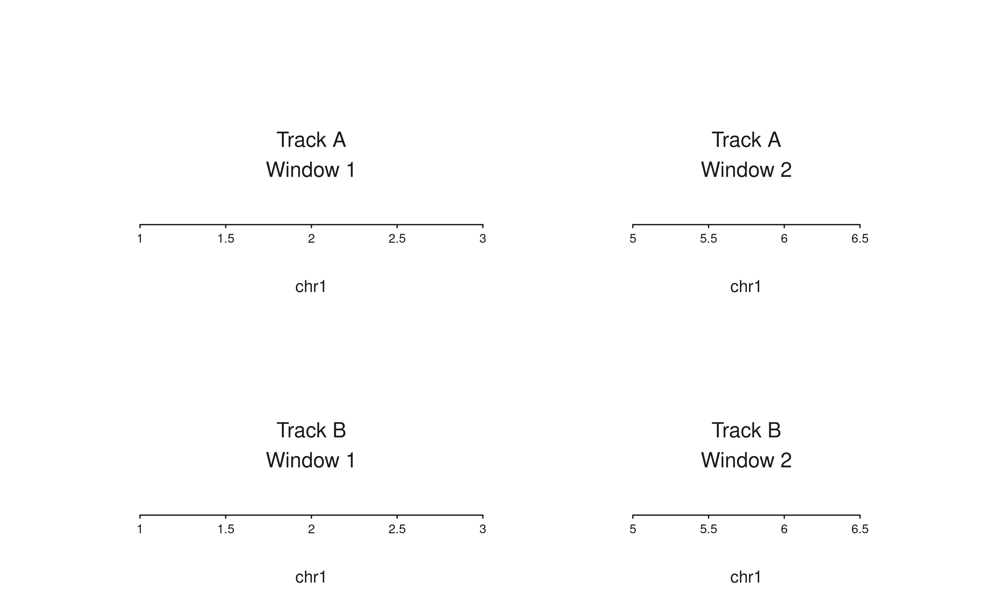
Reading the schematic, from outside to inside on each track:
- Pink — track outer margin (axis titles live here).
- Yellow — track inner margin.
- Purple — window outer margin (per-window spacer).
- Green — window inner margin (axis lines, ticks, tick labels live here).
- Blue — plot area, where elements render.
- The vertical green/blue split inside a track is the window margin between the two windows.
- The horizontal gap between the two tracks is the track gap.
Window gap width
aes("window.gap.width" = <npc>) controls the
horizontal gap between adjacent windows within a track. Set it on
seq_plot() to apply across every track, or on a specific
seq_track() to override the plot-level value for that track
only. Default is 0.01.
gap_win <- GRanges(
"chr1",
IRanges(start = c(1, 1e6 + 1, 2e6 + 1), width = 1e6)
)
gap_lbl <- function(track_name) {
GRanges(
"chr1",
IRanges(start = c(5e5, 1.5e6, 2.5e6), width = 1),
label = paste0(track_name, "\nW", c(1, 2, 3))
)
}
# Three tracks, three gap widths: collapsed, default, generous.
seq_plot(aesthetics = aes(
windowBackground = "#92BFDB", windowBorder = "grey30",
xAxisLine = FALSE, xAxisTicks = FALSE, xAxisLabels = FALSE,
xAxisTitle = FALSE, yAxisLine = FALSE, yAxisTicks = FALSE,
yAxisLabels = FALSE, yAxisTitle = FALSE,
"window.gap.width" = 0 # plot-level default for all tracks
)) %|%
seq_track(track_id = "Collapsed (0)",
data = gap_lbl("Collapsed"),
mapping = map(x = start, label = label),
windows = gap_win) %+%
seq_text(aesthetics = aes(fontsize = 11)) %__%
seq_track(track_id = "Default (0.01)",
data = gap_lbl("Default"),
mapping = map(x = start, label = label),
windows = gap_win,
aesthetics = aes("window.gap.width" = 0.01)) %+%
seq_text(aesthetics = aes(fontsize = 11)) %__%
seq_track(track_id = "Generous (0.05)",
data = gap_lbl("Generous"),
mapping = map(x = start, label = label),
windows = gap_win,
aesthetics = aes("window.gap.width" = 0.05)) %+%
seq_text(aesthetics = aes(fontsize = 11)) -> p
p$plot()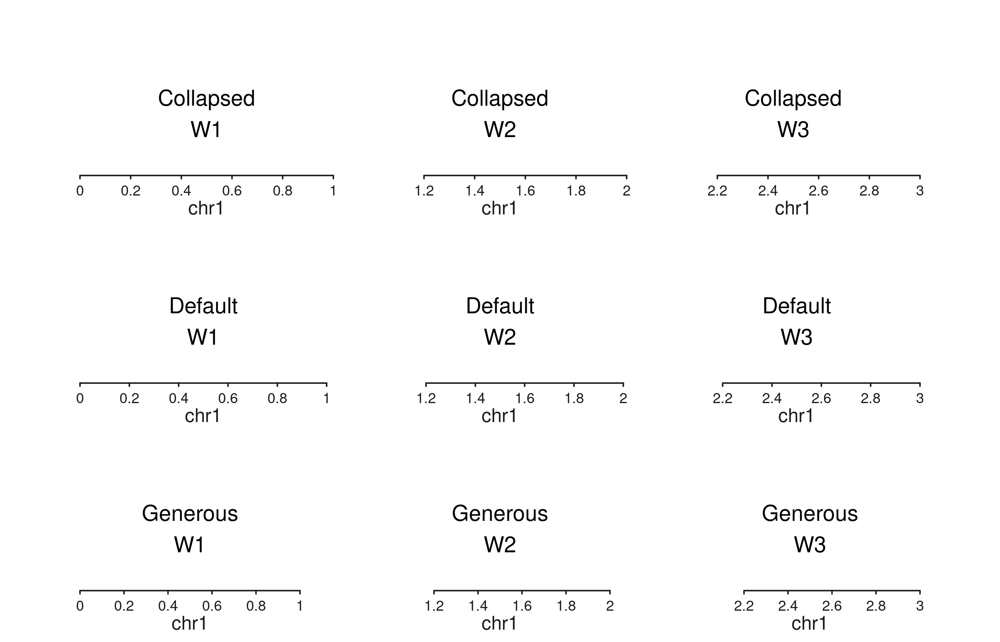
The legacy seq_track(window_margin = ...) constructor
argument is deprecated and emits a warning when used; switch to
aes("window.gap.width" = ...). The older
aes(window_gaps = ...) key still works as an alias but
window.gap.width takes priority when both are set.
Margin recipes
The five zones are independent knobs. The examples below share a single small dataset and vary only the margin arguments so the effect of each one is visible.
recipe_win <- GRanges("chr1", IRanges(1e6, 3e6))
recipe_gr <- GRanges(
"chr1",
IRanges(start = seq(1.1e6, 2.9e6, by = 2e5), width = 8e4),
score = runif(10, 0.2, 1.0)
)Minimal: drop the axis titles and the track outer margin — the plot fills the full track cell.
seq_plot(aesthetics = aes(xAxisTitle = FALSE, yAxisTitle = FALSE)) %|%
seq_track(data = recipe_gr,
mapping = map(x = start, y = score),
windows = recipe_win,
track_outer_margin = 0,
window_inner_margin = 0.02) %+%
seq_bar(aesthetics = aes(fill = "#4385BE")) -> p
p$plot()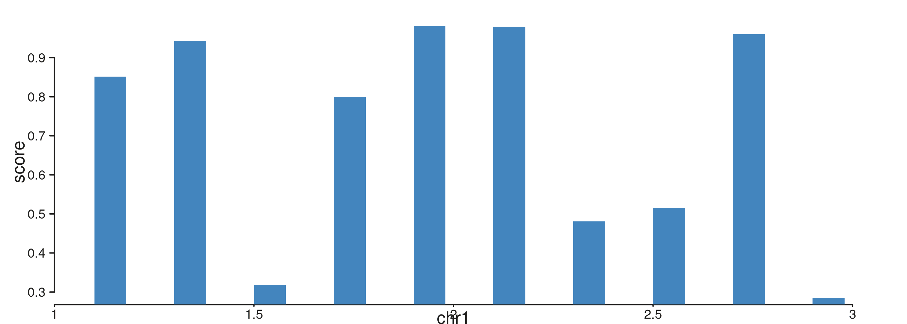
Room for titles and labels: widen both track and
window margins. The axis titles (start, score)
auto-populate from the mapping.
seq_plot() %|%
seq_track(data = recipe_gr,
mapping = map(x = start, y = score),
windows = recipe_win,
track_outer_margin = c(0.05, 0.05, 0.02, 0.02),
window_inner_margin = 0.06) %+%
seq_bar(aesthetics = aes(fill = "#4385BE")) -> p
p$plot()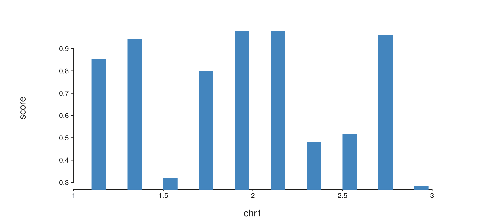
Asymmetric margins: the length-4 form uses base-R
par(mar = c(bottom, left, top, right)) order. Below the
x-axis title gets a wider bottom band; the top edge stays flush.
seq_plot() %|%
seq_track(data = recipe_gr,
mapping = map(x = start, y = score),
windows = recipe_win,
track_outer_margin = c(0.06, 0.06, 0, 0),
track_inner_margin = 0.015,
window_inner_margin = 0.04) %+%
seq_bar(aesthetics = aes(fill = "#4385BE")) -> p
p$plot()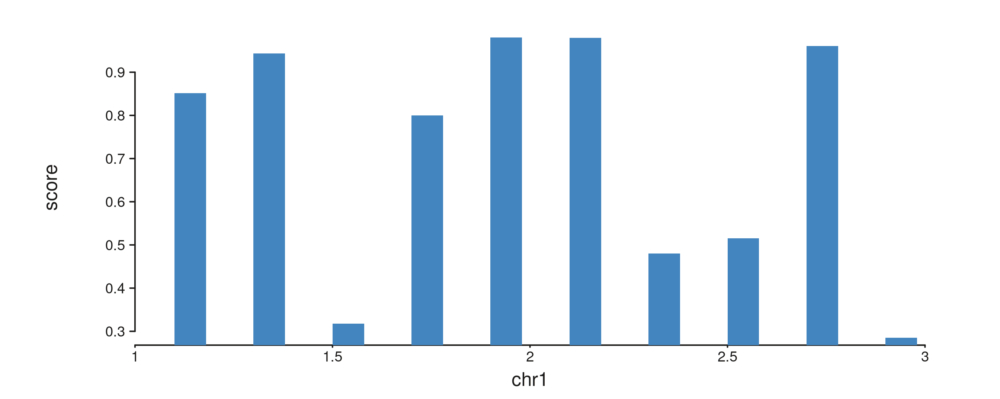
Plot margin and margin overlay
seq_plot(plot_margin = ) sets the outermost canvas
margin in NPC units (default 0.02).
highlight_margins = TRUE overlays translucent bands on
every margin region while tuning a layout: plot_margin red,
track_outer_margin dark blue,
track_inner_margin light blue,
window_outer_margin dark green,
window_inner_margin light green, plot area pink.
mk <- function(...) {
seq_plot(windows = win, ...) %+%
(seq_track(data = recipe_gr, mapping = map(x = start, y = score),
track_outer_margin = 0.04, track_inner_margin = 0.03,
window_outer_margin = 0.02, window_inner_margin = 0.02) %+% seq_bar())
}
mk(plot_margin = 0)$plot()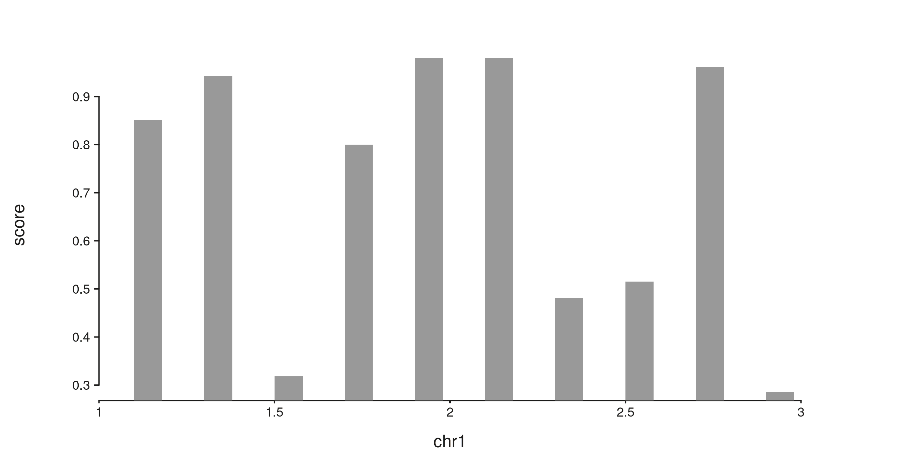
mk(plot_margin = 0.05, highlight_margins = TRUE)$plot()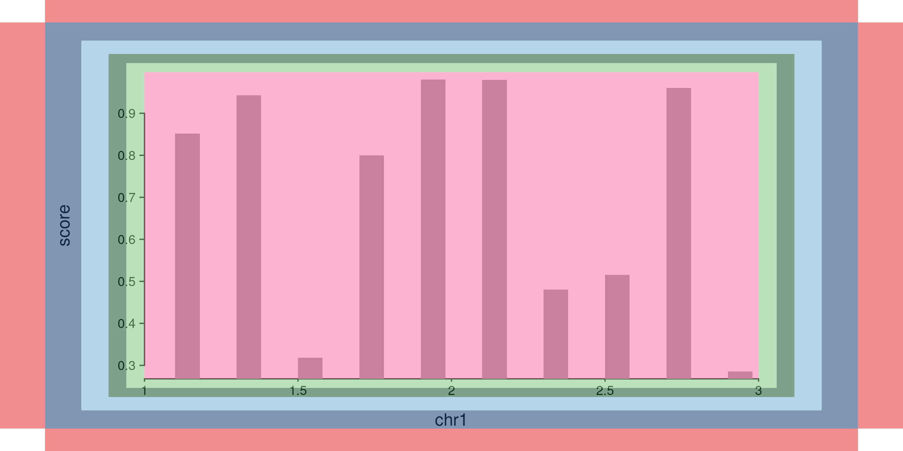
Track and window sizing
Relative sizing is controlled by three arguments:
track_width (within a row), track_height
(across rows), and the scale mcols column on the
windows GRanges (within a track’s plot region).
Unequal track widths on one row. Track A is 3× wider than B.
win_small <- GRanges("chr1", IRanges(1e6, 3e6))
gr_small <- GRanges("chr1",
IRanges(start = seq(1.1e6, 2.9e6, by = 2e5), width = 8e4),
score = runif(10, 0.2, 1.0))
seq_plot() %|%
seq_track(track_id = "A",
data = gr_small,
mapping = map(x = start, y = score),
windows = win_small,
track_width = 3) %+%
seq_bar(aesthetics = aes(fill = "#4385BE")) %|%
seq_track(track_id = "B",
data = gr_small,
mapping = map(x = start, y = score),
windows = win_small,
track_width = 1) %+%
seq_lollipop(aesthetics = aes(color = "#AF3029")) -> p
p$plot()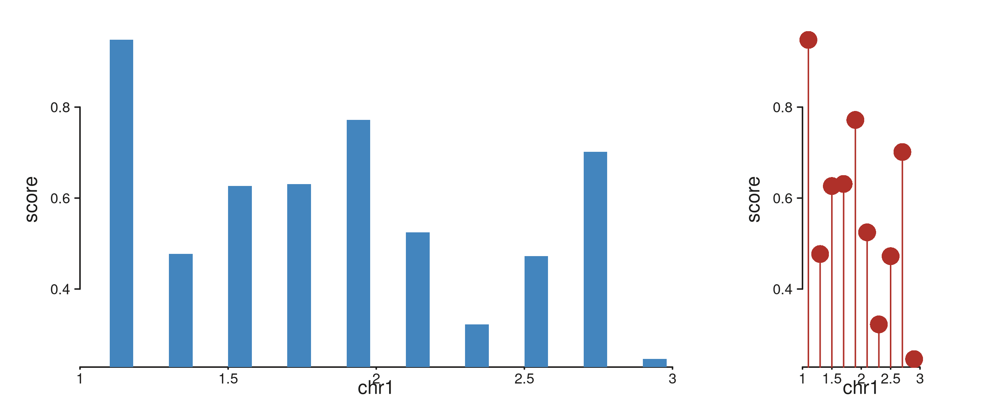
Unequal track heights on stacked rows. A points track twice as tall as the bar track below it.
xs_sig <- seq(1.05e6, 2.95e6, length.out = 40)
sig_gr <- GRanges("chr1", IRanges(start = xs_sig, width = 1),
score = sin((xs_sig - 1e6) / 3e5) * 0.4 + 0.5)
seq_plot() %|%
seq_track(track_id = "Signal",
data = sig_gr,
mapping = map(x = start, y = score),
windows = win_small,
track_height = 2) %+%
seq_line(aesthetics = aes(color = "#4385BE", linewidth = 1.5)) %__%
seq_track(track_id = "Bars",
data = gr_small,
mapping = map(x = start, y = score),
windows = win_small,
track_height = 1) %+%
seq_bar(aesthetics = aes(fill = "#8B7EC8")) -> p
p$plot()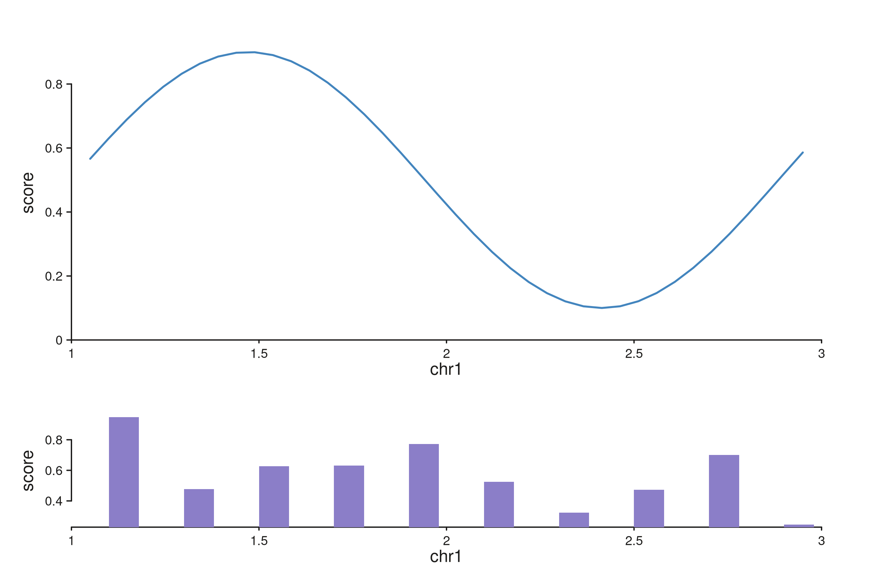
Per-window scale factor. Within a multi-window
track, windows are sized by
width(windows) * mcols(windows)$scale. Defaults to the
auto-inferred scale for all windows. Setting one window’s scale to
0 shrinks it to nothing; setting distinct scales compresses
or expands individual windows relative to others.
# Two windows of equal genomic width, but the second rendered at
# 2× the first's relative width.
scaled_win <- GRanges(
"chr1", IRanges(start = c(1e6, 5e6), end = c(3e6, 7e6)))
S4Vectors::mcols(scaled_win)$scale <- c(1e-6, 2e-6)
scaled_gr <- GRanges("chr1",
IRanges(start = c(seq(1.2e6, 2.8e6, length.out = 5),
seq(5.2e6, 6.8e6, length.out = 5)),
width = 1e5),
score = runif(10, 0.2, 1.0))
seq_plot() %|%
seq_track(data = scaled_gr,
mapping = map(x = start, y = score),
windows = scaled_win) %+%
seq_bar(aesthetics = aes(fill = "#4385BE")) -> p
p$plot()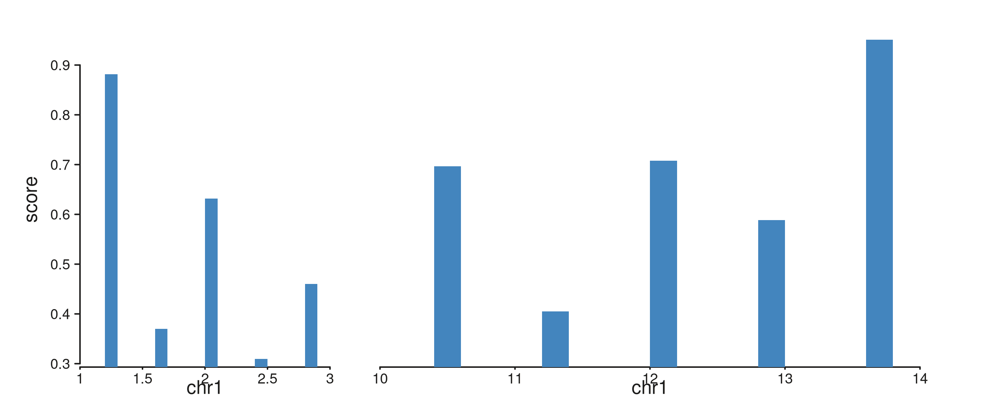
Track-level unit override with
window_scale. Pass window_scale on
seq_track to force a fixed scale factor for all windows, or
a positional vector to set each window independently.
window_scale overrides the auto-inferred unit but is
overridden by any mcols(windows)$scale already present.
Length-1 applies to all windows; any other mismatched length triggers a
warning and recycles.
# Two 5 Mb windows — auto-inference gives Mb, but we force kb.
mb_win <- GRanges("chr1", IRanges(start = c(1e6, 1e7 + 1), width = 5e6))
mb_gr <- GRanges("chr1",
IRanges(start = c(seq(1.2e6, 5.8e6, length.out = 5),
seq(1.02e7, 1.58e7, length.out = 5)),
width = 2e5),
score = runif(10, 0.2, 1.0))
seq_plot() %|%
seq_track(data = mb_gr,
mapping = map(x = start, y = score),
windows = mb_win,
window_scale = 1e-3) %+%
seq_bar(aesthetics = aes(fill = "#4385BE")) -> p
p$plot()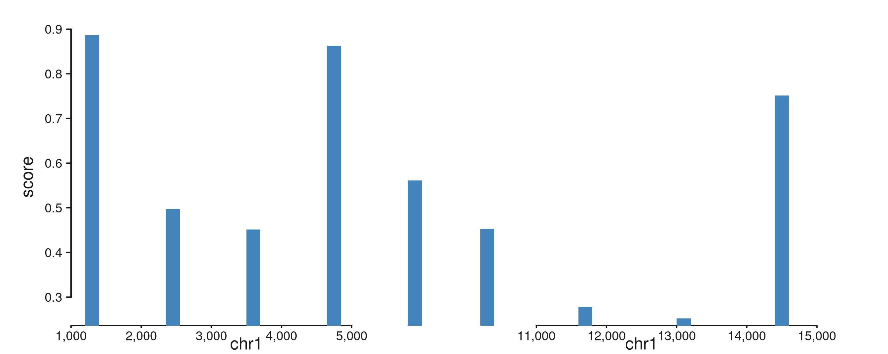
Multi-region windows
A windows GRanges with several ranges lays each out as
its own panel in the same track. Mappings resolve per panel and panel
widths follow width(windows).
starts_A <- seq(1.1e6, 2.9e6, length.out = 12)
starts_B <- seq(5.1e6, 6.4e6, length.out = 12)
multi_gr <- GRanges("chr1",
IRanges(start = c(starts_A, starts_B), width = 5e4),
score = runif(24, 0.2, 1.0),
region = rep(c("A", "B"), each = 12))
seq_plot() %|%
seq_track(data = multi_gr,
mapping = map(x = start, y = score, group = region),
windows = mwin) %+%
seq_bar() -> p
p$plot()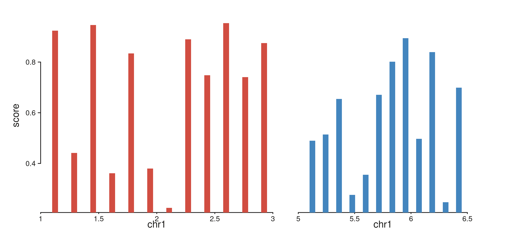
Inheriting windows
seq_plot(windows = ) is inherited by tracks without
their own windows, and a bare seq_scale_genomic() inherits
from its track. This removes repeated boilerplate.
(seq_plot(windows = win) %+%
(seq_track(data = gr, mapping = map(x = xv, y = score)) %+% seq_point()) %__%
(seq_track(data = gr, mapping = map(x = start, y = score),
scale_x = seq_scale_genomic()) %+% seq_point()))$plot()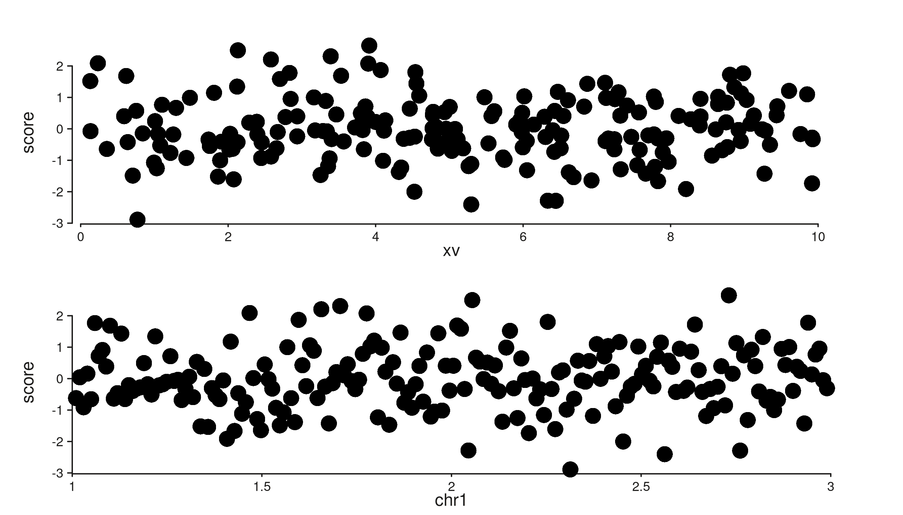
Patchwork layout strings
Each unique letter is a region and # cells stay blank.
With a layout string every track’s direction is ignored;
placement comes from matching track_id to the letters.
Tracks whose track_id is absent from the string are
silently skipped, so one chain can be reused across layouts.
layout <- "
##AA
##AA
BBBC
BBBD
"
p <- seq_plot(layout = layout) %+%
seq_track(data = gr, mapping = map(x = start, y = score),
windows = win, track_id = "A") %+% seq_line() %+%
seq_track(data = gr, mapping = map(x = start, y = score),
windows = win, track_id = "B") %+% seq_area() %+%
seq_track(data = gr, mapping = map(x = start, y = score),
windows = win, track_id = "C") %+% seq_bar() %+%
seq_track(data = gr, mapping = map(x = start, y = score),
windows = win, track_id = "D") %+% seq_point()
p$plot()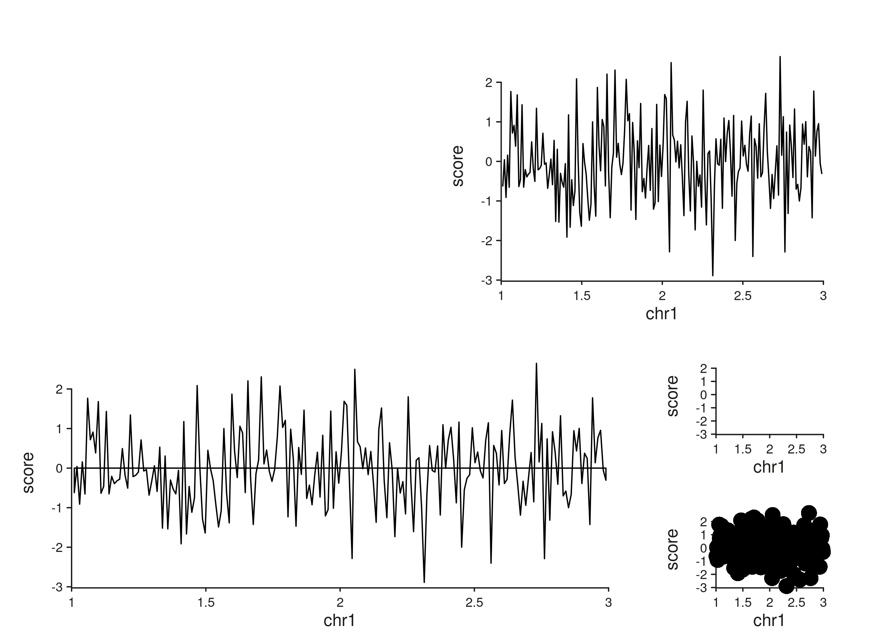
seq_preview_layout() validates a layout without data,
from a string or from a positional plot:
seq_preview_layout(layout = layout)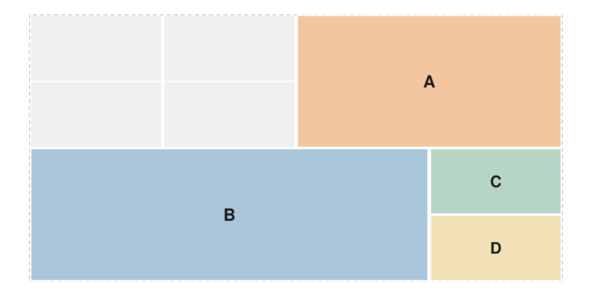
seq_preview_layout(plot_obj = p_pos)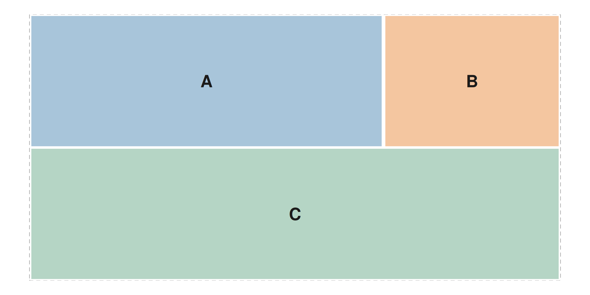
Relative track_width / track_height apply
within a cell, and the outer cell bounds come from the layout string. A
letter can span several rows or columns as long as its cells form a
rectangle (an L-shape is an error). Here B spans two rows
on the right and A has track_height = 2 within
its cell:
span_layout <- "
AABB
AABB
CCCC
"
seq_preview_layout(layout = span_layout)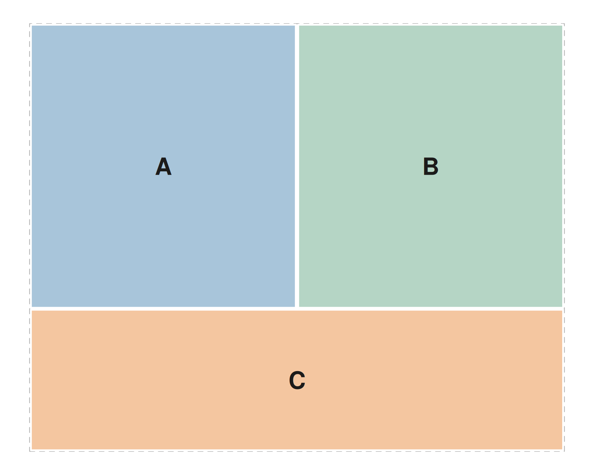
p <- seq_plot(layout = span_layout) %+%
seq_track(data = gr, mapping = map(x = start, y = score),
windows = win, track_id = "A", track_height = 2) %+% seq_line() %+%
seq_track(data = gr, mapping = map(x = start, y = score),
windows = win, track_id = "B") %+% seq_bar() %+%
seq_track(data = gr, mapping = map(x = start, y = score),
windows = win, track_id = "C") %+% seq_point()
p$plot()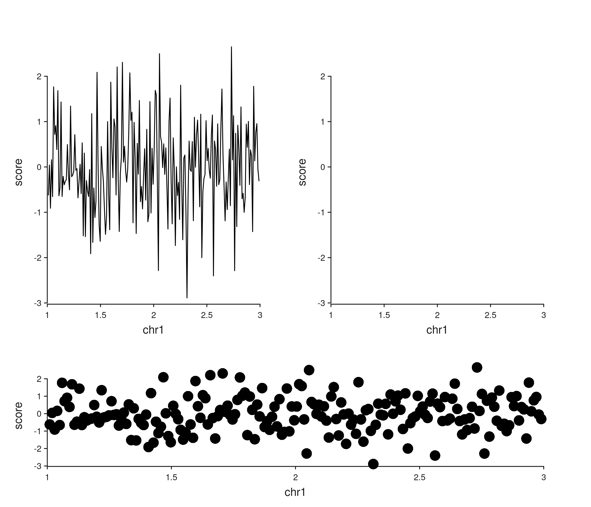
seq_preview_circos() draws a minimal circular schematic
for whole-genome plots from a positional plot (patchwork layouts are not
supported):
gw <- default_genome_windows()
circ <- seq_plot() %+%
seq_track(windows = gw, track_id = "whole_genome") %+% seq_line()
seq_preview_circos(plot_obj = circ)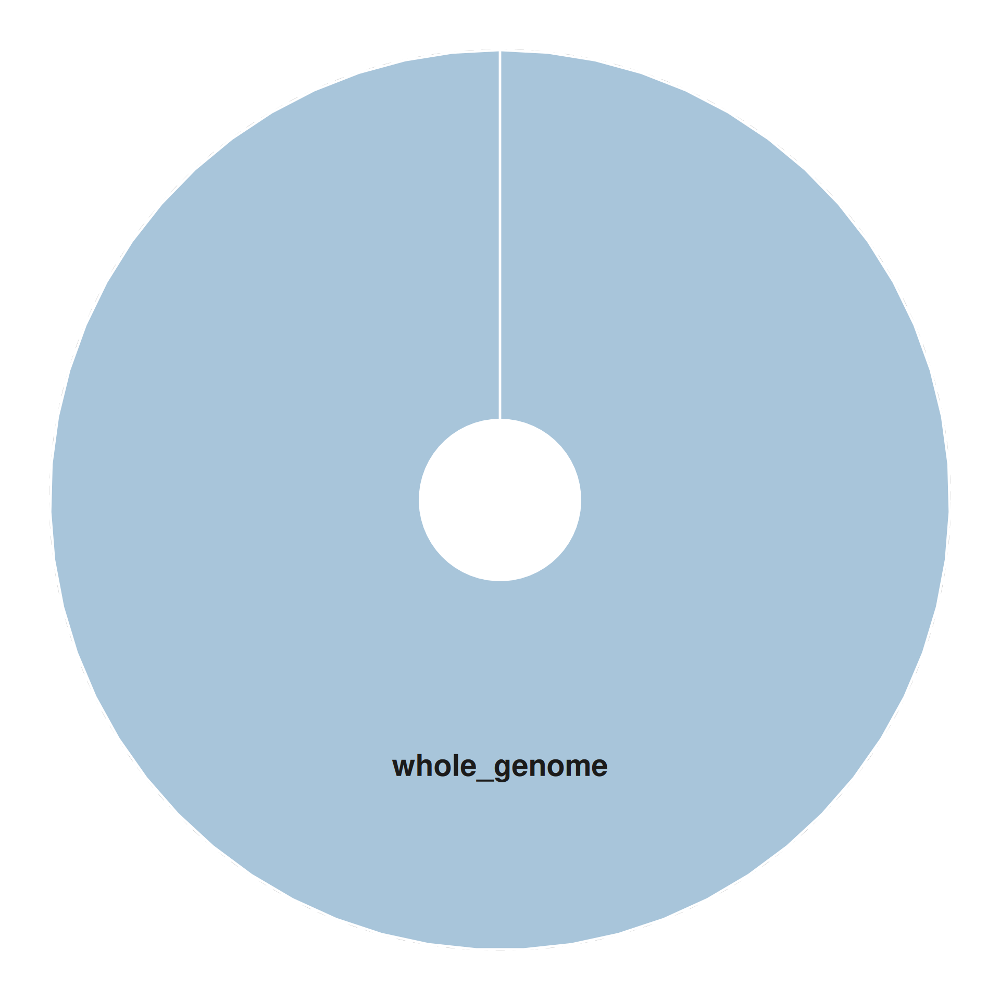
A genome-browser layout
An ideogram strip, a ribbon with a density sidebar, bar and lollipop tracks, and gene models across the bottom.
cb <- load_cytobands()
bar_gr <- GRanges(
"chr1",
IRanges(start = seq(1.1e6, 2.9e6, by = 2e5), width = 8e4),
score = runif(10, 0.2, 1.0)
)
gene_gr <- GRanges("chr1",
IRanges(
start = c(1.10e6, 1.20e6, 1.35e6, 1.50e6, 1.58e6,
1.90e6, 2.05e6, 2.18e6, 2.30e6,
2.55e6, 2.68e6, 2.80e6),
width = c( 3e4, 6e4, 4e4, 5e4, 2e4,
4e4, 8e4, 5e4, 3e4,
6e4, 3e4, 5e4)
),
gene_id = rep(c("A", "B", "C"), times = c(5, 4, 3)),
gene_name = rep(c("TP53", "MYC", "BRCA1"), times = c(5, 4, 3)),
strand_col = rep(c("+", "-", "+"), times = c(5, 4, 3)),
feature = c("UTR","exon","exon","exon","UTR",
"UTR","exon","exon","UTR",
"exon","exon","exon"),
color = c(rep("#205EA6", 5),
rep("#AF3029", 4),
rep("#66800B", 3)))
gm <- map(group = gene_id, type = feature, strand = strand_col,
label = gene_name, color = color)
layout_str <- "
IIII
AAAB
CCDD
GGGG
GGGG
"
seq_preview_layout(layout = layout_str)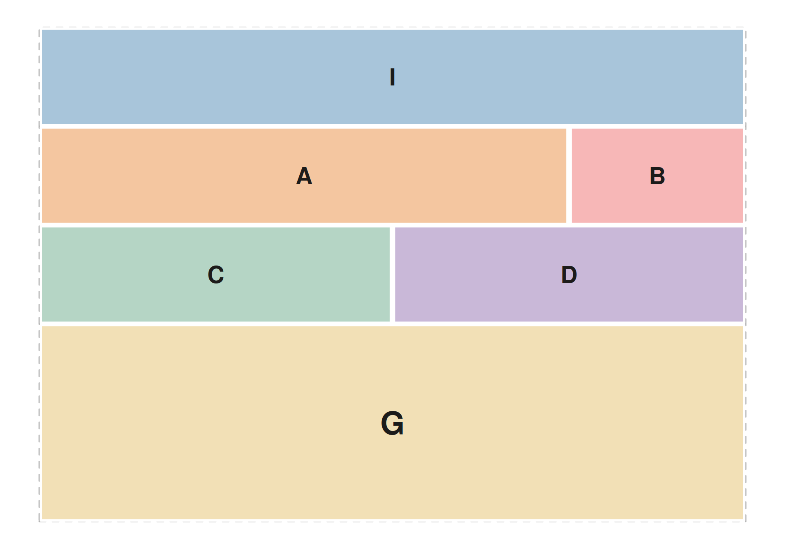
# per-track datasets
sig_xs <- seq(1.05e6, 2.95e6, length.out = 80)
sig_mu <- sin((sig_xs - 1e6) / 3e5) * 0.25 + 0.55
sig_gr <- GRanges("chr1", IRanges(sig_xs, width = 1),
mean = sig_mu,
lo = sig_mu - 0.1,
hi = sig_mu + 0.1)
density_gr <- GRanges("chr1",
IRanges(start = seq(1e6, 3e6, length.out = 200), width = 1),
score = c(rnorm(120, 0.3, 0.05),
rnorm(80, 0.7, 0.08)))
mut_gr <- GRanges("chr1",
IRanges(start = sample(seq(1.05e6, 2.95e6, by = 1e4), 18), width = 1),
impact = runif(18, 0.2, 1.0))
seq_plot(layout = layout_str) %+%
# I — ideogram strip
seq_track(track_id = "I",
windows = create_genome_windows("chr1:1000000-3000000")) %+%
seq_ideogram(data = cb) %+%
# A — signal ribbon
seq_track(track_id = "A",
data = sig_gr,
mapping = map(x = start, y_min = lo, y_max = hi),
windows = win) %+%
seq_ribbon(aesthetics = aes(fill = "#4385BE", alpha = 0.5)) %+%
# B — density sidebar
seq_track(track_id = "B",
data = density_gr,
mapping = map(x = start, y = score),
windows = win) %+%
seq_density(aesthetics = aes(fill = "#879A39", alpha = 0.7)) %+%
# C — bar summary
seq_track(track_id = "C",
data = bar_gr,
mapping = map(x = start, y = score),
windows = win) %+%
seq_bar(aesthetics = aes(fill = "#8B7EC8")) %+%
# D — lollipop mutation calls
seq_track(track_id = "D",
data = mut_gr,
mapping = map(x = start, y = impact),
windows = win) %+%
seq_lollipop(aesthetics = aes(color = "#AF3029", linewidth = 1.2)) %+%
# G — gene models spanning the full bottom row
seq_track(track_id = "G",
data = gene_gr,
mapping = gm,
windows = win) %+%
seq_gene(gm) -> p
p$plot()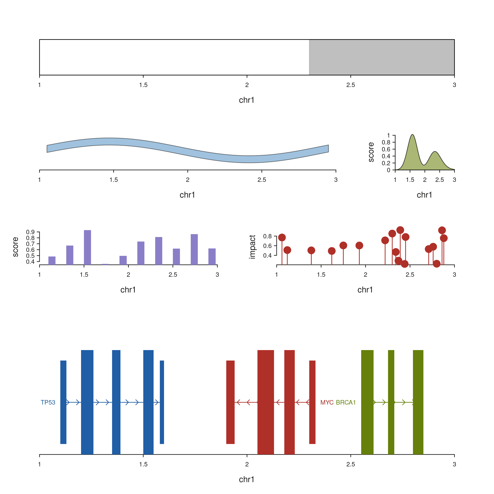
Cross-track connectors (seq_string,
seq_synteny, seq_zoom) can be added on top of
a layout like this; see vignette("links").